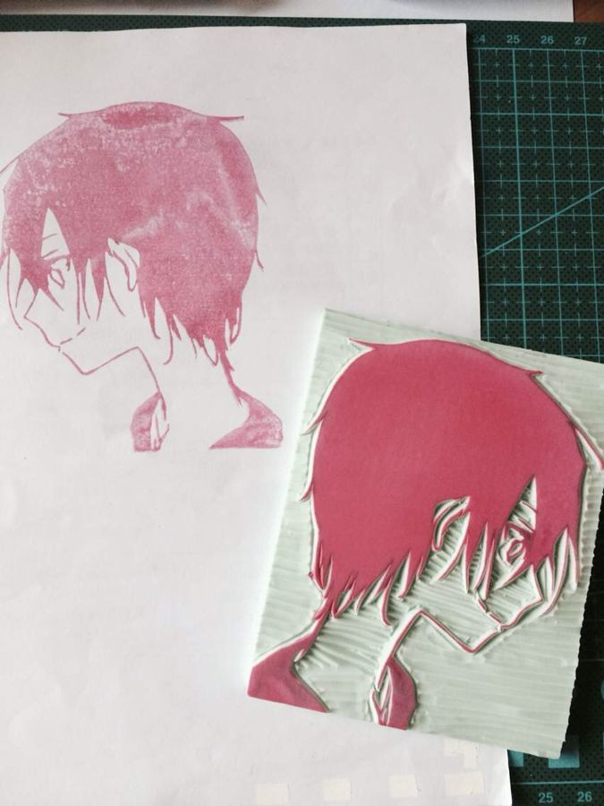
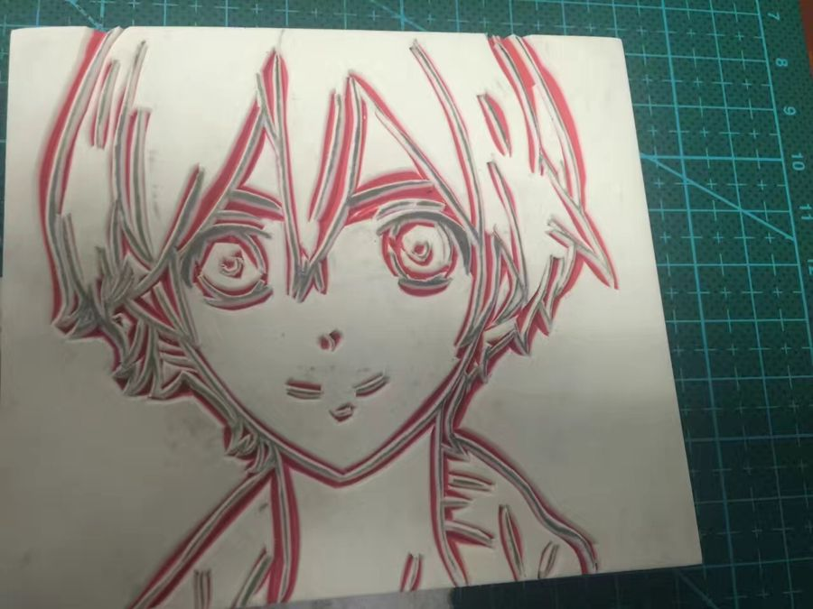
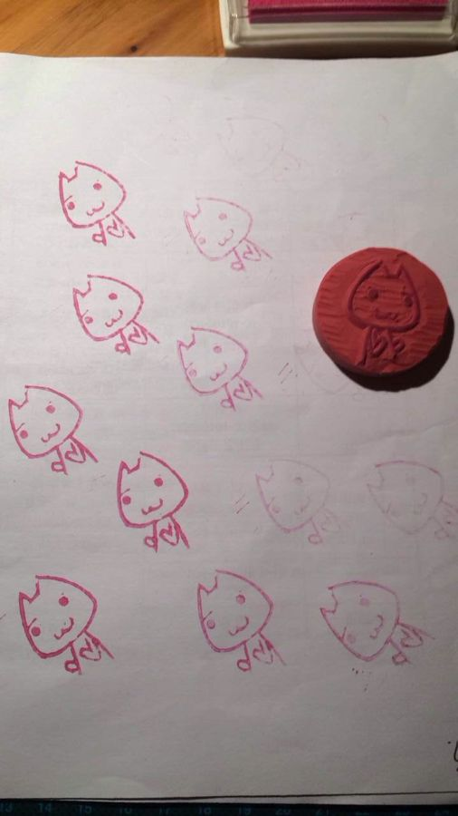
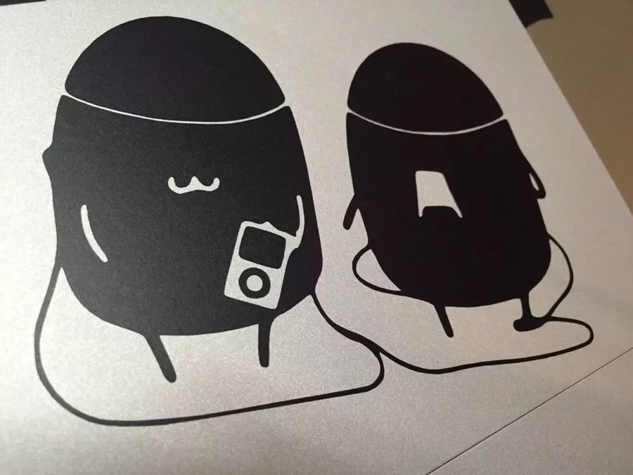
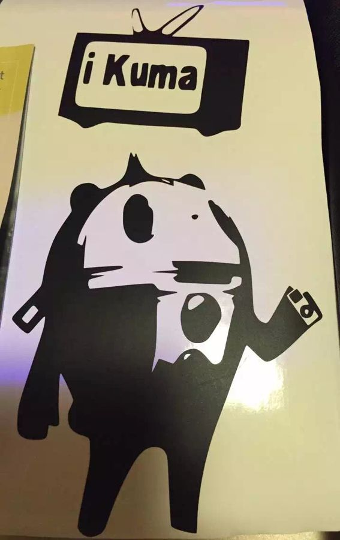
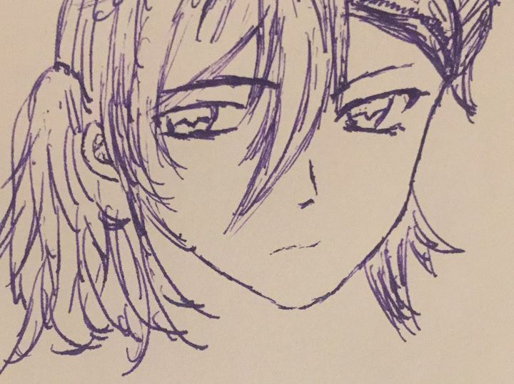
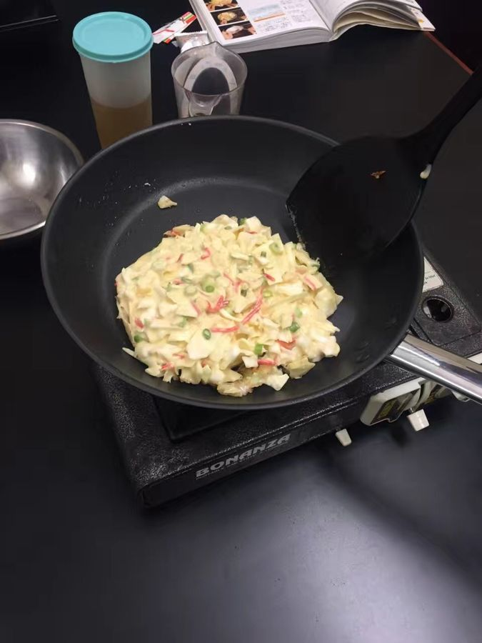
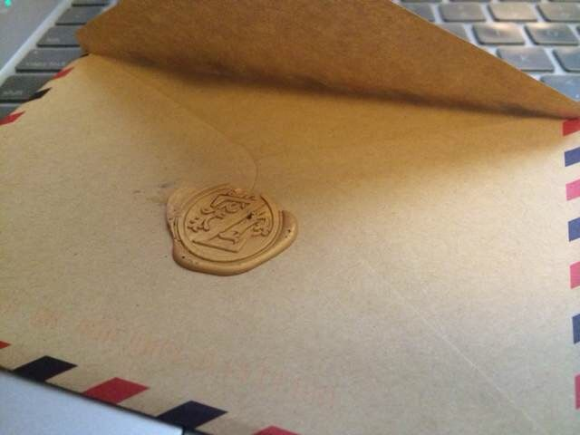

Knowledge Compass: A Question Answering System Guiding Students with Follow-Up Question Recommendations
Adjunct Proceedings of the 36th Annual ACM Symposium on User Interface Software and Technology (UIST), 1–4
I study how people focus, perceive, and decide while exploring data — and design visual analytics systems that notice where attention goes.
I am a Research Fellow at the National Institute of Education (NIE), Nanyang Technological University, Singapore, where I lead the development of interactive visual analytics systems that use emotion recognition to support teaching and learning in classrooms.
I received my Ph.D. in Computer Science from the University of North Carolina at Chapel Hill in 2024, advised by David Gotz. My dissertation, An Examination of Analytic Focus and Perception during Exploratory Visual Analysis, looks at how visualization systems can model what users are paying attention to, how to surface relevant content from that, and how priming and anchoring shape what people conclude.
Before that, I worked on UI virtualization for smartwatches with Don Porter, built clinical checklist software at the UNC Department of Radiation Oncology, and spent time as a visiting student at the HKUST VisLab.
Leading the development of interactive visual analytics systems built on emotion recognition algorithms designed for classroom environments.
Collaborated on a project to improve the learning process in K-12 education, which led to one publication.
Modeled users’ analytic focus during visual analysis of medical data and used it to recommend medical literature that puts the data in context.
Built an electronic checklist system for physicists and dosimetrists that replaced long-standing paper checklists and automatically checks some radiation doses for correctness. Worked closely with clinicians on patient safety and treatment quality.
Led a project on a UI porting system that supports different interactions on multiple devices with a shared runtime backend, part of an NSF project on UI virtualization.
Image category prediction with Caffe; Kinect data collection with the Microsoft SDK in C++; an alpha site for a human-tagged indoor image database.
Globalization and localization for the UAV control software UAVision (C#, Windows); a C++ FTP client/server between the drone (Ubuntu) and the ground station.
Maintained a histology database for deep-learning cell classification, as part of a study on male reproduction in the Collaborative Cross founder strains.
Built screen-saver animation and interface features for the Android app Clean Master (Java).
An Examination of Analytic Focus and Perception during Exploratory Visual Analysis. Advisor: David Gotz.
UI Virtualization on Smartwatches. Advisor: Don Porter.
Highest Distinction. Minors in Mathematics and Japanese.
Away from research I like to make things by hand, mostly rubber stamps, vinyl stickers, sketches and the occasional okonomiyaki. I also use Illustrator, InDesign, Ableton Live and Max.







